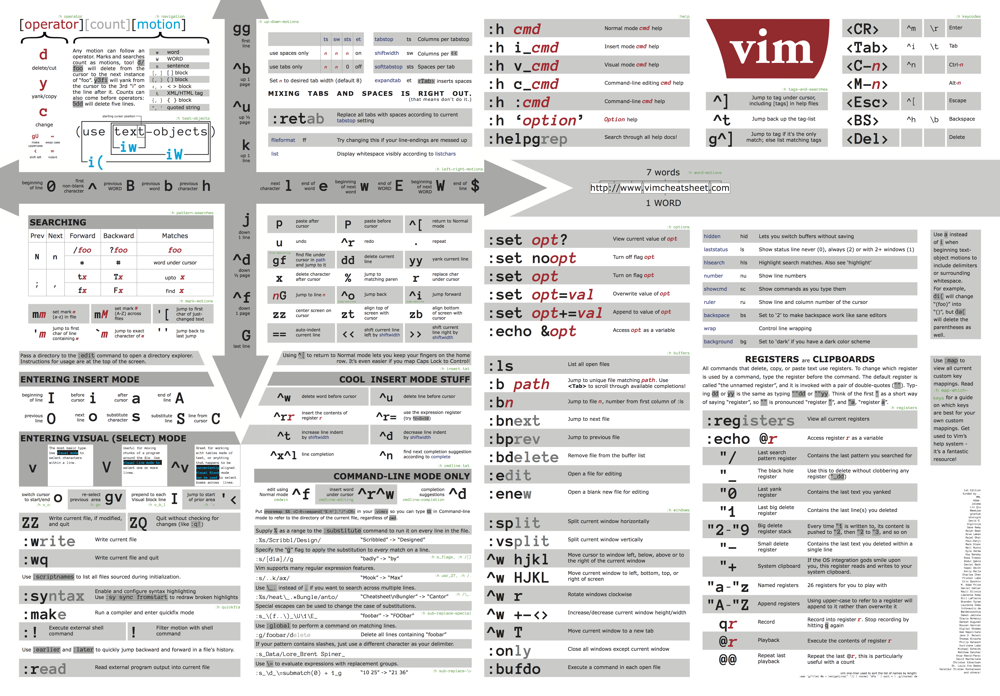

To update your plugins (if you're using the Plug manager), the command is
:PlugUpdate
| Command | Description |
|---|---|
G |
Jump to the last line of the file |
gg |
Jump to the first line of the file |
^^ |
Jump to the start of the current line |
$ |
Jump to the end of the current line |
3j or :+3 |
Jump by 3 lines down |
3G or :3 |
Jump to the 3rd line |
| Command | Description |
|---|---|
zR |
Open all folds |
zM |
Close all folds |
zA |
Toggle all folds at the cursor |
za |
Toggle the fold at the cursor |
:retab |
Adjust indent |
| Command | Description |
|---|---|
:w |
Save file without leaving vim |
ZZ or :wq |
Save file while leaving vim |
ZQ or :q! |
Leave vim without saving file |
:bd or ,bd |
Close file without leaving vim |
| Command | Description |
|---|---|
yy |
Copy the line at the cursor |
dd |
Cut the line at the cursor |
3yy |
Copy 3 lines from the line at the cursor |
3dd |
Cut 3 lines from the line at the cursor |
p |
Paste starting from the next line of the cursor |
"_dd |
Delete the line at the cursor (cut it in void) |
"_d3j |
Delete 3 lines down from the one at the cursor |
V3j |
Select 3 lines down from the one at the cursor |
| Command | Description |
|---|---|
/void |
Go to the first occurence of 'void' |
n |
Go to the next occurence of 'void' |
⇧ n |
Go to the previous occurence of 'void' |
| Command | Description |
|---|---|
u |
Undo the last change (can be used multiple times) |
⌃ r |
Redo the changes |
| Command | Descritpion |
|---|---|
:e main.java |
Open the 'main.java' from the current directory |
:new README.md |
Create the 'README.md' file in the current directory |
| Command | Description |
|---|---|
:e or :new` |
Create a buffer |
:badd file |
Create a buffer for 'file' without opening it |
:ls, :buffers or :files |
List of all the existing buffers |
:ls!, :buffers! or :files! |
List all the buffers including unlisted buffers |
:bd file or :4bd |
Close the 4th buffer or the one for the 'file' |
:bd file1 file2 file3 or :3,5bd |
Close multiple buffers (here 3) |
:bunload |
Hide the buffer but leave it in the buffer list |
:b file or :b 3 |
Open the buffer from the list (completion with ⇥ works) |
:split file |
Split window horizontally and load 'file' |
:vsplit file |
Split window vertically and load 'file' |
:⌃ w h |
Go to the buffer at the left (works with h, j, k and l) |
| Command | Description |
|---|---|
⌃ n |
Toggle the NERDTree |
m |
Bring up the NERDTree Filesystem Menu |
a |
Add a child node |
To create a new file, you have to Open NERDTree and Enter its Filesystem Menu.
Then Add a new child node and finally Enter the file/directory name.
| Command | Description |
|---|---|
,tm |
Toggle the tablemode_ (has to be deactivated to save the file) |
!!date |
Write the current date and time at the next line from the cursor |
!!date v+3d |
Write the date and time in 3 days at the newt line from the cursor |
!!date v-3d |
Write the date and time 3 days ago at the newt line from the cursor |
nvim -d file1 file2 |
Open two files in vim to compare them |
